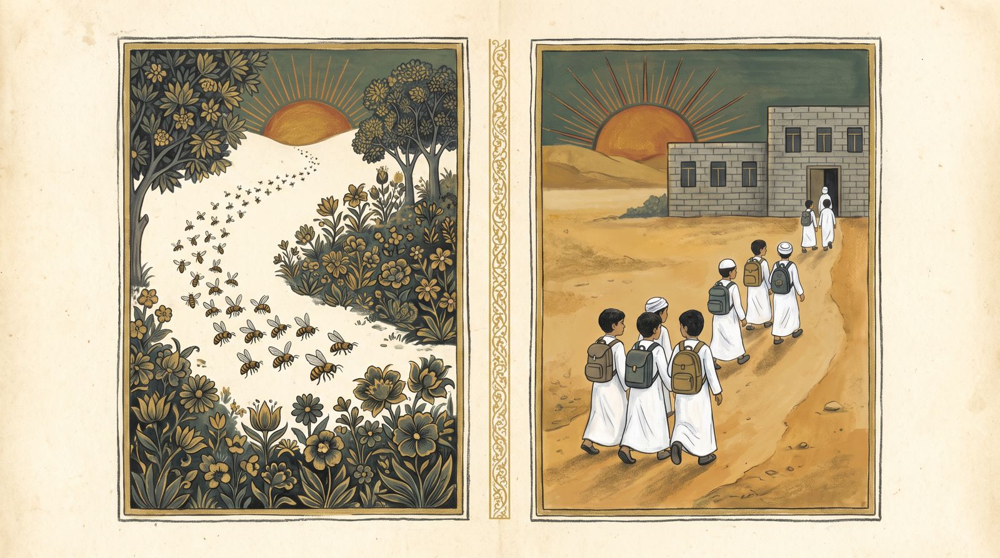

تذكّرْ: أركانُ التشبيه
من الدرسِ الماضي — من يسمّي الأركانَ قبلَ أن تنكشف؟
والآن… هذه الجملة
حدّدوا نوعَ التشبيه — ثمّ عدّوا: كم شيئاً في كلِّ طرف؟
- هل شبّهنا «المعلّمَ» وحدَه بـ«المصباحِ» وحدَه؟
- ماذا دخلَ في الصورةِ الأولى؟ وماذا يقابلُه في الثانية؟
تعبيران… وعدستان
اقرؤوهما بصوتٍ عالٍ، ثمّ أجيبوا.
- أيُّ التعبيرَين يشبّهُ مفرداً بمفرد؟
- وأيُّهما يشبّهُ صورةً بصورةٍ أخرى؟
- في الثاني: هل يكفي أن نقول «الطلّابُ كالنحل» لننقلَ المعنى كلَّه؟
فكِّكِ الصورة: عنصرٌ يقابلُ عنصراً
في كلِّ نقرة: عنصرٌ من المشهدِ الأوّل يجدُ نظيرَه في الثاني.

المشبَّهالمشبَّهُ بهالمثالُ الأوّل
قبلَ الكشف: ما الصورةُ الأولى؟ وما الصورةُ الثانية؟
اختبارُ الانتزاع: احذفْ جزءاً… هل تبقى الصورة؟
أطفئوا عنصراً من المشبَّهِ به وراقبوا: هل ما زال الرمادُ يدلُّ على «الضياع»؟
المثالُ الثاني
صورةٌ من الحديثِ الشريف: ماذا يقابلُ «الصلواتِ الخمس»؟
المثالُ الثالث
شوقي يرثي عمرَ المختار — كيف صارَ الأسيرُ المقيَّدُ مهيباً؟
المثالُ الرابع
عُدْنا إلى صورةِ التمهيد — صوغوا أركانَها بأنفسِكم.
البيان: ما الذي اختلف؟
كما في الكتاب — قارنوا العمودَين قبلَ قراءةِ الحكم.
تشبيهُ مفردٍ بمفرد ●──●
- «الرجلُ العظيمُ كالبدرِ في السموّ» ← الرجلُ بدر
- «كأنّ القائدَ أسدٌ» ← القائدُ أسد
- «بدت الفتاةُ قمراً» ← الفتاةُ قمر
وجهُ الشبهِ صفةٌ واحدة: السموّ، الشجاعة، الجمال.
تشبيهُ هيئةٍ بهيئة ⁂──⁂
- أعمالُ الكفّار ← رمادٌ تذروه الريح
- المصلّي ← المغتسلُ من النهرِ خمساً
- الأسيرُ المقيَّد ← أسدٌ يجرّرُ حيّة
- الطلّابُ ← النحل
وجهُ الشبهِ منتزَعٌ من تماثلِ هيئتَين: شكلٌ اجتمعت فيه عدّةُ أمورٍ بشكلٍ آخرَ اجتمعت فيه أيضاً عدّةُ أمور.
كيف أعرفُه؟ ثلاثةُ أسئلة
طريقةٌ عمليّةٌ تحملُها معك إلى كلِّ شاهد.
لماذا هو أرقى التشبيهات؟
من الكتاب: «من أرقى أنواعِ التشبيهاتِ وأدقِّها، وأكثرِها فنّيّة».
أرقى وأدقُّ
يرسمُ لوحةً كاملةً لا لوناً واحداً، فهو أكثرُ التشبيهاتِ فنّيّة.
عملٌ ذهنيٌّ أطول
إدراكُه يحتاجُ إلى عملٍ ذهنيٍّ أطولَ وأعقدَ ممّا يتطلّبُه التشبيهُ المفرد.
أمتعُ
لما فيه من التأمّلِ والغوص؛ فوجهُ الشبهِ يحتاجُ إلى ضربٍ من التأويلِ والصرفِ عن الظاهر.
الخلاصة
كما في الكتاب — ليقلْها طالبٌ بلسانِه قبلَ كشفِها.
١التعريف
التشبيهُ التمثيليّ: ما كان وجهُ الشبهِ فيه صورةً منتزَعةً من متعدّد، أو هو تشبيهُ صورةٍ بصورة.٢شرطُه
وهذا يتطلّبُ أن يكونَ المشبَّهُ مركَّباً (متعدّداً)، والمشبَّهُ به مركَّباً (متعدّداً).٣علامتُه
إذا حذفتَ جزءاً من الصورةِ اختلَّ وجهُ الشبه — فهو هيئةٌ لا صفةٌ مفردة.٤قيمتُه
من أرقى التشبيهاتِ وأدقِّها وأمتعِها؛ لأنّه يحتاجُ إلى تأمّلٍ وغوصٍ وتأويل.لعبة ١: الفرّاز — مفردٌ أم تمثيليّ؟
انقرِ التشبيهَ ثمّ صندوقَه. ليدافعْ كلُّ فريقٍ عن اختيارِه قبلَ «تحقّق».
الفرّاز
لعبة ٢: صورةٌ تبحثُ عن صورتِها
انقرِ المشبَّهَ (يميناً) ثمّ المشبَّهَ به الذي يكملُ هيئتَه (يساراً).
التوصيل
لعبة ٣: خمّنِ الشاهدَ من الصورة
الصورةُ تتّضحُ شيئاً فشيئاً — كلّما عرفتموها أبكرَ كسبتم نقاطاً أكثر.
المَعرِض الضبابي
المَعرِضُ الضبابي
ثماني لوحاتٍ لشواهدِ الدرسِ والتدريبات
لعبة ٤: الحكمُ السريع
عشرُ جولاتٍ بعشرِ ثوانٍ: تمثيليٌّ أم لا؟
السباق
تدريباتُ الكتاب
ص ٣٤–٣٨ — سؤالٌ واحدٌ في كلِّ شريحة. يجيبُ الطالبُ ويعلّلُ قبلَ الكشف.